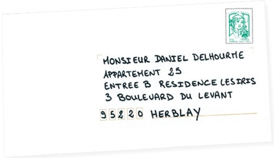

Повернутись на колишню сторінку
Правила заповнення конверту
Лицьова сторона
1. На лицьовій стороні вказується лише адреса одержувача:Madame,
або Monsieur з Прізвищем та Ім'ям (при
зверненні до приватних осіб),
або
назва організації + Madame, або Monsieur та
посада особи(якщо відомо);
адреса із зазначенням:
2. Максимум 6 рядків
3. Максимум 38 символів у рядку, включаючи пробіли
4. Без розділових знаків, курсиву та підкреслення
5. Останні 3 рядки великими літерами
6.
Адресна панель вирівняна по лівому краю
Зворотній бік
На звороті в лівому верхньому кутку необхідно вписати дані відправника та його адресу в порядку, аналогічному лицьовій стороні.
Порады від вашої листоноші
1) Конверт
Ваші
адреси будуть написані ще краще, якщо
ви використовуватимете для рукописних
листів заздалегідь підготовлений
конверт.
2) Поштовий індекс
Не забудьте чітко написати 5 цифр, що становлять поштовий індекс одержувача.
3) Ваша
адреса
У разі проблем із доставкою ваша пошта ніколи не загубиться, якщо ви не забудете написати адресу відправника на звороті конверта у лівому верхньому кутку.